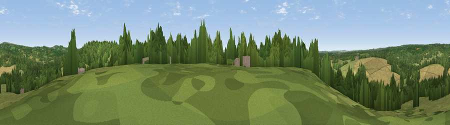

Viewpoint near Buxted
#29436 in England · top 43% of its area beats it · near BuxtedThe view, rendered

A 360° render of this exact spot computed from the terrain model, tree cover and land cover — summer colours, afternoon light, calibrated against photographs of famous viewpoints. Real trees, hedges and buildings will differ in detail.
The panorama
Grey silhouette: terrain skyline in each direction (720 bearings, Earth curvature and refraction included). Dashed green: skyline with trees (+15 m) and buildings (+8 m) as obstacles. Blue strip: how far the ground is visible on each bearing.
Where the view opens
Wedge length = distance to the farthest visible ground on that bearing (vegetation-aware). Rings at 10, 25 and 50 km.
What fills the view
43% grassland · 38% woodland · 17% cropland · 1% built-up
Angular shares of the visible panorama (visual magnitude), not map area. Landscape diversity 0.47 (0–1 Shannon).
Key numbers
More beautiful places nearby
The staircase of upgrades: each row has a higher view potential than everything closer. Driving times are estimates from straight-line distance, calibrated against real road routing — check an actual route before setting out.
| Place | Direction | Drive | Score |
|---|---|---|---|
| Viewpoint near Buxted | ENE · 1 km | ~3 min | 44.1 |
| Viewpoint near Rotherfield | NE · 5 km | ~11 min | 46.0 |
| Viewpoint near Fairwarp | NNW · 5 km | ~12 min | 46.3 |
| Viewpoint near Cross in Hand | ESE · 6 km | ~12 min | 47.7 |
| Viewpoint near Cross in Hand | ESE · 6 km | ~12 min | 54.0 |
| Viewpoint near Fairwarp | NNW · 6 km | ~13 min | 54.3 |
| Viewpoint near Rotherfield | NE · 7 km | ~15 min | 54.7 |
| Viewpoint near Upper Hartfield | NNW · 9 km | ~18 min | 59.6 |
50.99460, 0.14287 · source: screening · position refined by local search. Computed location — check access rights before visiting.